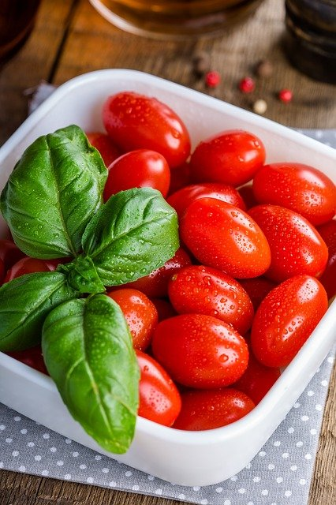
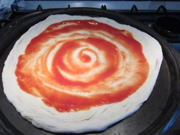
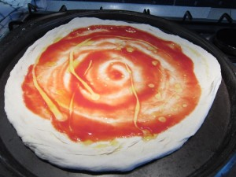
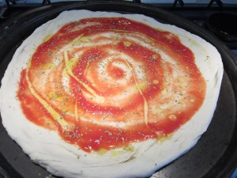
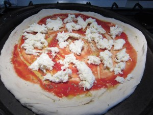

A pizza szósz
Na most aki a pizzaszósz recept olvasásakor valami bonyolult, agyonfűszerezett és órákig főzött mártást vár, azt ki kell, hogy ábrándítsam. Az olasz konyha és az olasz ételek nagyszerűsége éppen az egyszerűségükben rejlik, és ez különösen igaz a pizzára. Az igazi olasz pizza az egyik legegyszerűbb étel, mégis páratlanul finom. Nem kell túlbonyolítani, és máris olyan lesz, mint egy igazi olasz pizzériában.

Az eredeti olasz pizzaszósz recept nemes egyszerűséggel az, hogy nincs recept. Olasz szakácskönyvekben, gasztro blogokban nem is nagyon találkozni külön olyannal, hogy pizzaszósz recept, hacsak nem az itt leírt tanácsokkal. Nem kell más a pizzára ugyanis, mint paradicsom. Sima, egyszerű, ma már itthon is szinte bármelyik boltban beszerezhető vagy otthon elkészíthető passzírozott paradicsom.
Ez lehet:
- “Passata di pomodoro” (konzerv passzírozott paradicsom). Ezt a feliratot (passata di pomodoro) keresd az üveg, konzerv vagy papírdoboz feliratán, és akkor biztosan jó lesz a pizzára.
- Konzerv paradicsom, egész vagy darabolt (magja ne legyen benne). Ezt kicsit turmixold szét, mielőtt a pizzára teszed.
- Friss (vagy konzervként eltett) házi passzírozott paradicsom. A paradicsomot a magjától és héjától szabadítsd meg, majd egy nagyobb lyukú szűrőn nyomd át, és főzd el a levét. Befőzve is elteheted.
Pizzaszósz recept – vagyis hogyan alakul ki mégis az az isteni szósz a pizzán
-
Kend szét a megformázott pizzatésztán a paradicsomot körkörös mozdulatokkal. Egy 35 cm-es pizzára kb. 3-4 evőkanálnyi kell, tehát nem sok, különben elázik a tészta. A szélén hagyj 1-2 cm széles részt szabadon, ez lesz a pereme.
 -
Önts a pizzára egy-két evőkanál extra szűz olívaolajat.
 - Sózd meg ízlés szerint. Ez el is hagyható, különösen erőteljesebb ízű feltéteknél, mint az olasz (pármai) sonka, vagy gorgonzola, kéksajt.
-
Szórd meg szárított oregánóval (magyarul szurokfűvel) ízlés szerint, kb. egy kávéskanálnyi kell rá.
 -
Nyomkodd ki a kezeddel a vizet a mozzarellából amennyire tudod, majd rusztikus darabokra tépkedve oszlasd el a pizzán. Eredeti, “vízben” úszó mozzarellát használj. Egy 35 cm-es pizza kb. 110-150 g-ot vesz fel. Ez kicsit függ a mozzarella nedvességtartalmától, ha többet teszel rá eláztatod a tésztát. (A pizza mozzarella sajt egyetlen előnye, hogy nem vizes, ezért szinte bárhogy sütöd, nem áztatja el a pizzád. Viszont a szósz sem lesz vele az igazi, így nem javaslom – ez egyébként is egy amerikai találmány, az olaszok szerintem azt sem tudják, hogy micsoda.)
 - Erre jönnek a feltétek, ízlés és fantázia szerint. Vannak persze klasszikus pizzák, amikhez mindenhol ugyanaz a feltét dukál, de itt tényleg szárnyalhat a fantáziád. Ha igazi olasz pizzát akarsz, akkor kevés, de jó minőségű feltétet tegyél rá, illetve pizzánként legfeljebb két-három különböző fajtát.